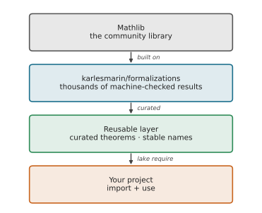
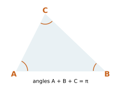
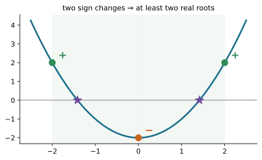
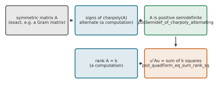

The Reusable layer: a practical guide
Machine-checked theorems you can use in your own Lean 4 proofs — from installing them to using every one of them.
Watch the videoSimulations (Spanish)
🎯What you will be able to do
By the end of this guide you will have a Lean project that uses the Reusable layer, and you will know how to find, read, apply and combine any of its theorems. You do not need to read their proofs: Lean has checked each one, and you use its statement the way you use a theorem from a textbook.
The layer is useful when Mathlib does not (yet) have the statement you need, or has it in a form that is awkward to apply. Three things it does for you, all worked out in this guide:
- 🔢 Count real roots of a polynomial from a few sign changes, without computing the roots (Recipe 2).
- ✅ Certify that a quadratic form is a sum of k squares: two theorems turn a check of signs into the decomposition (Recipe 4).
- 📐 Prove a classical inequality in two lines once the right identity is available (Recipe 1).
The whole method in one sentence. Find the theorem, give it its arguments, prove its hypotheses, and take the part of its conclusion you need. Everything else in this guide is that sentence in detail.
From a showcase card to a Lean proof
Can you prove cos A + cos B + cos C ≤ 3/2 for the angles of a triangle? This route takes you from a search to the proof.
- Find the theorem. Search for
trianglein the showcase and open Wolstenholme’s identity (card R0002). - Read the signature and copy the import. Start your file with
import Formalizations.Reusable.Geometryandopen Formalizations.Reusable. In the signature,his the proof you supply that A + B + C = π. - Apply the identity. Recipe 1 uses the two squares
to prove the general inequality. In Example 2,
supply x = y = z = 1 and
h. The identity makes 3 − 2(cos A + cos B + cos C) a sum of two squares. - Check the proof. Paste Example 2 into
Example.lean. The proof usessq_nonnegfor each square andnlinarithto derive the bound. Runlake lean Example.leanin your configured project. Lean accepts the proof if the command exits successfully.
🧱What the Reusable layer is

The repository karlesmarin/formalizations holds thousands of machine-checked results, most of them written for my
research papers. The Reusable layer is a small, curated part of it: theorems that are useful outside the paper they
came from, under stable names of the form Formalizations.Reusable.<name>. Release
v0.15.0, the one this edition describes, has 82 of them in 9 areas.
Every entry of the layer:
- is a theorem proved in the archive: the layer re-exports it, no proof is copied or rewritten;
- depends only on Lean's standard axioms (
propext,Classical.choice,Quot.sound), checked in every release; - has a role: 🔌
API, a lemma meant to be used inside other proofs, or 🏛️showcase, a classical theorem, complete in itself, more often consulted than imported; - has a card in the showcase: the statement in words, the exact Lean signature, the import it needs, a compiled example, where it comes from and which axioms it uses.
What it is not: it does not replace Mathlib (it is built on Mathlib and pins one Mathlib commit), and it is not a collection of tactics. It is a set of theorems.
Stability. Names under Formalizations.Reusable are not removed within a major series. If a statement has to
change incompatibly, the old name stays as a deprecated alias for two releases.
🧰Before you start
You need:
- Lean 4 with
elan, the Lean version manager. If you have never installed Lean, follow https://lean-lang.org/install/; it takes a few minutes and installs VS Code support as well. - git.
- About 5 GB of disk: Mathlib, already compiled, is downloaded once.
- Basic Lean: what
theorem,example,by,exactandhavemean. If these words are new, the first chapters of Mathematics in Lean (https://leanprover-community.github.io/mathematics_in_lean/) are the best start; come back here after them.
🚀Installing the layer
4.1 In a new project, step by step
Create the project.
lake +leanprover/lean4:v4.35.0 new myproject std.toml
cd myproject
Use the standard template (std.toml), not math. The math template adds its own Mathlib, pinned to a
different commit from the one this layer is built with, and you would end up with two Mathlibs that disagree. Mathlib
comes into your project through this layer.
Declare the dependency. Open lakefile.toml and add at the end:
[[require]]
name = "formalizations"
git = "https://github.com/karlesmarin/formalizations"
rev = "v0.15.0"
rev pins the release: your project keeps working the same way until you change it.
Where the values come from. This edition of the guide is generated from release v0.15.0: its tag goes in
rev, and its Lean version (leanprover/lean4:v4.35.0, the file lean-toolchain at the tag) in the lake new line. For a later
release, take its tag from https://github.com/karlesmarin/formalizations/releases and the lean-toolchain at that tag; the showcase always names both.
Download.
lake update
This fetches the layer and Mathlib, and downloads Mathlib already compiled. The first time takes a while (several gigabytes); later updates are quick.
A first file. Create Example.lean in the project folder:
import Formalizations.Reusable.NumberTheory
open Formalizations.Reusable
#check wolstenholme_choose_modEq
Check it.
lake lean Example.lean
Lean prints the statement of the theorem: your project is ready. On Linux and Windows Lake downloads the layer already compiled; on macOS it compiles it once.
Avoid a bare lake build in a project from the standard template: its default target is an executable, and building
it compiles every imported Mathlib module to native code, which takes hours. lake lean <file> is what you want; if
your files belong to a library of your project, lake build <library> does the same.
4.2 In a project you already have
If your project uses the same Lean and Mathlib (the ones named in lean-toolchain and lake-manifest.json of the repository at the tag you pin; for
v0.15.0, Lean v4.35.0 and Mathlib commit f0b4c81), add the [[require]] block of step 1 to
its lakefile.toml (or the equivalent require line in a lakefile.lean) and run lake update. If it uses another
Mathlib, Lake will report a conflict: either move your project to these versions or wait for a release of the layer
on yours.
4.3 Working in VS Code
Open the project folder in VS Code with the Lean 4 extension installed. When you open Example.lean, the infoview
panel shows, at the cursor, the goal still to prove and the type of what is under the cursor. Hovering over a name such
as wolstenholme_choose_modEq shows its statement; Ctrl-click (Cmd-click) jumps to where it is defined. This is the
fastest way to read a theorem while you use it.
✍️Your first theorem, word by word
Replace the #check line of Example.lean with:
example : Nat.choose 13 6 ≡ 1 [MOD 7 ^ 3] :=
(wolstenholme_choose_modEq 7 (by norm_num) (by norm_num)).1
Run lake lean Example.lean again. No output means Lean accepted the proof. Piece by piece:
example : …states something without naming it. Here: the binomial coefficient C(13, 6) = 1716 is congruent to 1 modulo 7³ = 343.wolstenholme_choose_modEqis the theorem of the layer (Wolstenholme, 1862): for a prime p ≥ 5, C(2p − 1, p − 1) ≡ 1 (mod p³) and C(2p, p) ≡ 2 (mod p³).7is the value of p. Lean then asks for the two hypotheses of the theorem: that 7 is prime and that 5 ≤ 7. Each(by norm_num)proves one of them by computation.- The theorem gives two congruences joined by "and";
.1takes the first, which is exactly our statement (2·7 − 1 = 13 and 7 − 1 = 6).
🔎Finding the theorem you need
The showcase (https://karlesmarin.github.io/blueprints/reusable/) lists every theorem with a search box. Search in words ("rank", "real roots", "triangle", "congruence") or browse by area. Each card shows:
- the statement in words and the exact Lean signature;
- the import: the module you write after
import(the area of the theorem, for exampleFormalizations.Reusable.LinearAlgebra);import Formalizations.Reusableimports every area at once; - a compiled example: code Lean checked in this release, ready to paste;
- the axioms it uses, the release (with its Lean and Mathlib versions), and the paper or classical source it comes from.
The manifest Formalizations/Reusable/manifest.toml holds the same information as data, one entry per theorem,
if you prefer to search it with your own scripts. Section 10 of this guide lists every theorem by area.
Inside Lean you can ask directly:
#check psd_quadForm_eq_sum_rank_sq -- its statement
#print axioms psd_quadForm_eq_sum_rank_sq -- which axioms it rests on
Reading a signature
theorem psd_quadForm_eq_sum_rank_sq {n : Type*} [Fintype n] [DecidableEq n] {A : Matrix n n ℝ}
(hA : A.PosSemidef) {k : ℕ} (hk : A.rank = k) :
∃ v : Fin k → (n → ℝ), ∀ u, u ⬝ᵥ (A *ᵥ u) = ∑ i, (v i ⬝ᵥ u) ^ 2- Arguments in braces
{n},{A},{k}are implicit: Lean deduces them from the others; you do not write them. - Arguments in square brackets
[Fintype n]are instances: Lean finds them itself for the usual types (Fin 3,ℕ,ℝ, …). - Arguments in parentheses
(hA : …),(hk : …)are the ones you supply: here, a proof thatAis positive semidefinite and a proof that its rank isk. - What follows the last colon is the conclusion: what you get.
🛠️All the ways of using a theorem
The same theorem can enter a proof in several ways. Here they are with one theorem, matrix_rank_add_le
(the rank of a sum is at most the sum of the ranks).
| Tactic | Use it when | Example |
|---|---|---|
exact |
the goal is exactly the conclusion | exact matrix_rank_add_le A B |
have |
you want the conclusion as a fact for later | have h := matrix_rank_add_le A A |
refine … ?_ |
some hypotheses are proved afterwards | Recipe 2 |
rw, simpa using |
the conclusion is an equation, or almost your goal | Recipe 6 |
.1, .2, obtain |
the conclusion is an “and” or an “exists” | Section 5 |
| combine | one theorem’s output is another’s input | Recipe 4 |
Directly, when your goal is the conclusion — exact:
example (A B : Matrix (Fin 2) (Fin 3) ℚ) : (A + B).rank ≤ A.rank + B.rank :=
matrix_rank_add_le A B
As a fact you then use — have and a tactic that finishes:
example (A : Matrix (Fin 2) (Fin 3) ℚ) : (A + A).rank ≤ 2 * A.rank := by
have := matrix_rank_add_le A A
omega
Leaving some arguments for later — refine with ?_, each ?_ becomes a new goal (Recipe 2 does this).
When the conclusion is an equation — rw rewrites with it; simp only [...] or simpa using ... let Lean adjust
small differences of form (Recipe 6).
Specializing — give values to the variables (wolstenholme_choose_modEq 7 …) and take a part of an "and" with
.1 / .2 (Section 5), or of an "exists" with obtain ⟨v, hv⟩ := ….
Combining two theorems — the output of one is the hypothesis of the other (Recipe 4).
Inside a longer proof that uses Mathlib — a theorem of the layer is an ordinary Lean theorem: mix it with Mathlib lemmas and any tactic.
🧪Six recipes
Each recipe has the same parts: 🧩 the problem, 📜 the theorem, 💻 the code, ✅ what Lean checked, and 🎯 a
variation to try. All the code is in the file ReusableManualDemo.lean,
compiled against release v0.15.0; paste it after open Formalizations.Reusable Matrix Polynomial in a file that
imports Formalizations.Reusable.
| Area | Theorem | You get | |
|---|---|---|---|
| 1 | 📐 Geometry | wolstenholme_defect_eq_sq_add_sq |
an inequality for every triangle |
| 2 | 🧬 Polynomials | card_roots_toFinset_ge_of_alternating_sign |
a lower bound on real roots |
| 3 | 🧬 Polynomials | newton_inequality_esymm_roots |
constraints on the coefficients |
| 4 | 🔢 Linear algebra | posSemidef_of_charpoly_alternating, psd_quadForm_eq_sum_rank_sq |
a sum-of-squares certificate |
| 5 | 🔣 Number theory | wolstenholme_choose_modEq |
a congruence modulo p³ |
| 6 | 🔢 Linear algebra | matrix_rank_add_rank_le_rank_fromBlocks |
a rank bound |

🧩The problem. For the angles A, B, C of a triangle and any real numbers x, y, z: 2yz cos A + 2zx cos B + 2xy cos C ≤ x² + y² + z² (Wolstenholme's inequality).
📜The theorem. wolstenholme_defect_eq_sq_add_sq (card R0002) says why: when A + B + C = π, the difference
between the two sides is exactly a sum of two squares.
💻The code.
example (x y z A B C : ℝ) (h : A + B + C = Real.pi) :
2 * y * z * Real.cos A + 2 * z * x * Real.cos B + 2 * x * y * Real.cos C
≤ x ^ 2 + y ^ 2 + z ^ 2 := by
have key := wolstenholme_defect_eq_sq_add_sq x y z A B C h
nlinarith [sq_nonneg (x - z * Real.cos B - y * Real.cos C),
sq_nonneg (z * Real.sin B - y * Real.sin C)]
✅What Lean checked. have key := … puts the identity among the facts; nlinarith combines it with the fact
that both squares are non-negative. The inequality holds for every triangle and every x, y, z.
🎯Try it. Set x = y = z = 1 to get cos A + cos B + cos C ≤ 3/2. Example 2 checks this special case in Lean.

🧩The problem. Show that a polynomial has at least n distinct real roots without finding them.
📜The theorem. card_roots_toFinset_ge_of_alternating_sign (card R0011): if a nonzero real polynomial changes
sign between consecutive points of n + 1 increasing points, it has at least n distinct real roots, one in each gap.
💻The code. For X² − 2 at the points −2, 0, 2:
example : 2 ≤ ((X ^ 2 - C 2 : ℝ[X]).roots.toFinset.card) := by
have hne : (X ^ 2 - C 2 : ℝ[X]) ≠ 0 := by
intro h
have := congrArg (Polynomial.eval 0) h
simp at this
refine card_roots_toFinset_ge_of_alternating_sign _ hne 2 ![-2, 0, 2] ?_ ?_
· refine Fin.strictMono_iff_lt_succ.2 fun i => ?_
fin_cases i <;> norm_num
· intro i
fin_cases i <;> norm_num
✅What Lean checked. The three things you supply: the polynomial is not zero (at 0 it is −2), the points −2 < 0 < 2 increase, and the values at consecutive points have opposite signs: 2·(−2) < 0 and (−2)·2 < 0.
🎯Try it. For X³ − 3X take the points −2, −1, 1, 2 (values −2, 2, −2, 2) and n = 3: three real roots.
🧩The problem. If all the roots of a polynomial are real, its coefficients cannot be arbitrary.
📜The theorem. newton_inequality_esymm_roots (card R0015), Newton's inequalities: for a monic real polynomial
whose roots are all real (it splits over ℝ), the elementary symmetric functions eₖ of the roots satisfy
eₖ² · C(n,k−1) C(n,k+1) ≥ eₖ₋₁ eₖ₊₁ · C(n,k)².
💻The code. The case k = 1, for every degree n ≥ 2:
example (p : ℝ[X]) (hp : p.Splits) (hm : p.Monic) (h2 : 2 ≤ p.natDegree) :
(p.roots.esymm 1) ^ 2 * ((p.natDegree.choose 0 : ℝ) * (p.natDegree.choose 2 : ℝ))
≥ (p.roots.esymm 0) * (p.roots.esymm 2) * ((p.natDegree.choose 1 : ℝ)) ^ 2 :=
newton_inequality_esymm_roots hp hm le_rfl h2
✅What Lean checked. The theorem needs k ≥ 1 (here le_rfl, because k = 1) and k + 1 ≤ n (here h2). With
e₀ = 1, e₁ = sum of the roots and e₂ = sum of the products of pairs, it reads (n − 1) e₁² ≥ 2n e₂.
🎯Try it. For a quadratic X² + bX + c with real roots, this is b² ≥ 4c: the discriminant is non-negative.

🧩The problem. You have a symmetric matrix A, known exactly (for example a Gram matrix found by a computer search), and you want a proof that its quadratic form uᵀAu is a sum of exactly k squares of linear forms.
📜The theorems. Two steps:
posSemidef_of_charpoly_alternating(card R0032): if the coefficients of the characteristic polynomial of a symmetric real matrix alternate in sign, the matrix is positive semidefinite. Checking the signs of finitely many rational numbers is an exact computation.psd_quadForm_eq_sum_rank_sq(card R0033): a positive semidefinite matrix of rank k has a quadratic form that is a sum of exactly k squares.
💻The code.
example {n : Type*} [Fintype n] [DecidableEq n] (A : Matrix n n ℝ) (hA : A.IsSymm)
(halt : ∀ k ≤ A.charpoly.natDegree, 0 ≤ (-1 : ℝ) ^ (A.charpoly.natDegree - k) * A.charpoly.coeff k)
(k : ℕ) (hk : A.rank = k) :
∃ v : Fin k → (n → ℝ), ∀ u, u ⬝ᵥ (A *ᵥ u) = ∑ i, (v i ⬝ᵥ u) ^ 2 :=
psd_quadForm_eq_sum_rank_sq (posSemidef_of_charpoly_alternating hA halt) hk
✅What Lean checked. The first theorem turns the sign condition halt into positive semidefiniteness; the second
turns that and the rank into the k squares. This is the chain I use in my own research on sums of squares: a
computer finds a candidate, an exact computation checks signs and rank, and these two theorems make the conclusion a
theorem.
🎯Try it. For the matrix ((2, 1), (1, 2)) the characteristic polynomial is X² − 4X + 3: the signs +, −, + alternate and the rank is 2, so the form 2u₁² + 2u₁u₂ + 2u₂² is a sum of two squares.
The example of Section 5 is this recipe: wolstenholme_choose_modEq (card R0026) with p = 7.
🎯Try it. With p = 11 and the second congruence .2: C(22, 11) ≡ 2 (mod 11³).
🧩The problem. Bound the rank of a matrix given in blocks, without computing it.
📜The theorem. matrix_rank_add_rank_le_rank_fromBlocks (card R0023): over a field, the rank of a block
upper-triangular matrix [[A, B], [0, D]] is at least rank A + rank D, whatever B is.
💻The code.
example (B : Matrix (Fin 2) (Fin 2) ℚ) :
4 ≤ (fromBlocks (1 : Matrix (Fin 2) (Fin 2) ℚ) B 0 (1 : Matrix (Fin 2) (Fin 2) ℚ)).rank := by
have h := matrix_rank_add_rank_le_rank_fromBlocks (1 : Matrix (Fin 2) (Fin 2) ℚ) B
(1 : Matrix (Fin 2) (Fin 2) ℚ)
simpa only [rank_one, Fintype.card_fin] using h
✅What Lean checked. With identity blocks on the diagonal, rank A + rank D = 2 + 2 = 4: the 4 × 4 matrix is invertible, for every corner B.
🎯Try it. Replace the second identity block by a matrix of rank 1: the bound becomes 3.
🧭Practical examples, start to finish
Six problems as you would meet them, solved from the question to the checked proof. Each one shows a different way of
working with the layer. All the code is in the file
ReusableManualPractice.lean, compiled against release v0.15.0; it
starts with open Formalizations.Reusable Matrix Polynomial and open scoped Kronecker.
| You want to show | You use | The idea | |
|---|---|---|---|
| 1 | a cubic has three real roots | your own lemma on top of R0011 | build once, reuse |
| 2 | cos A + cos B + cos C ≤ 3/2 | R0002 with x = y = z = 1 | specialise a general identity |
| 3 | the rank of a 6 × 6 tensor product | R0024 | never write the matrix |
| 4 | B(7) ≡ 2 (mod 7) | R0031 with n = 0 | rewrite, then compute |
| 5 | C(26, 13) ≡ 2 (mod 13³) | R0026, second part | take the part you need |
| 6 | 2 sin(π/3) · 2 sin(2π/3) = 3 | R0006 with n = 3 | let exact_mod_cast fix the casts |
Example 1 — your own lemma, then a concrete cubic
The question. Does X³ − 3X + 1 have three real roots? You will meet this kind of question again, so first write a small lemma of your own on top of the layer (card R0011): four increasing points with alternating signs give three distinct real roots. Then the cubic is one line.
theorem three_real_roots (p : ℝ[X]) (hp : p ≠ 0) (a b c d : ℝ) (h1 : a < b) (h2 : b < c) (h3 : c < d)
(s1 : p.eval a * p.eval b < 0) (s2 : p.eval b * p.eval c < 0) (s3 : p.eval c * p.eval d < 0) :
3 ≤ p.roots.toFinset.card := by
refine card_roots_toFinset_ge_of_alternating_sign p hp 3 ![a, b, c, d] ?_ ?_
· refine Fin.strictMono_iff_lt_succ.2 fun i => ?_
fin_cases i
· simpa using h1
· simpa using h2
· simpa using h3
· intro i
fin_cases i
· simpa using s1
· simpa using s2
· simpa using s3
example : 3 ≤ ((X ^ 3 - C 3 * X + 1 : ℝ[X]).roots.toFinset.card) := by
have hne : (X ^ 3 - C 3 * X + 1 : ℝ[X]) ≠ 0 := by
intro h
have := congrArg (Polynomial.eval 0) h
simp at this
exact three_real_roots _ hne (-2) 0 1 2 (by norm_num) (by norm_num) (by norm_num)
(by norm_num) (by norm_num) (by norm_num)
What happened. three_real_roots turns the general theorem (points given as a vector ![a, b, c, d]) into a
statement with plain hypotheses a < b, eval a p * eval b p < 0, … that are easy to supply. For the cubic, norm_num
evaluates the polynomial at −2, 0, 1, 2 (values −1, 1, −1, 3) and checks every hypothesis. Lesson: when you will use
a theorem many times, wrap it once in the form your problems have.
Example 2 — a classical bound for every triangle
The question. Show cos A + cos B + cos C ≤ 3/2 for the angles of any triangle.
example (A B C : ℝ) (h : A + B + C = Real.pi) : Real.cos A + Real.cos B + Real.cos C ≤ 3 / 2 := by
have key := wolstenholme_defect_eq_sq_add_sq 1 1 1 A B C h
nlinarith [key, sq_nonneg (1 - 1 * Real.cos B - 1 * Real.cos C), sq_nonneg (1 * Real.sin B - 1 * Real.sin C)]
What happened. The identity of card R0002 holds for all x, y, z; with x = y = z = 1 it says that
3 − 2(cos A + cos B + cos C) is a sum of two squares. nlinarith only has to add the two facts "a square is ≥ 0".
Lesson: a general identity is a family of results; choosing the values is the proof.
Example 3 — the rank of a tensor product, without the matrix
The question. What is the rank of the Kronecker product of the 2 × 2 and 3 × 3 identity matrices?
example : ((1 : Matrix (Fin 2) (Fin 2) ℚ) ⊗ₖ (1 : Matrix (Fin 3) (Fin 3) ℚ)).rank = 6 := by
rw [matrix_rank_kronecker]
simp [rank_one]
What happened. rw [matrix_rank_kronecker] (card R0024) replaces the rank of the 6 × 6 matrix by the product of two
ranks, and simp knows that an identity of size n has rank n. Lesson: rewrite with the theorem first, then let simp
finish the small computation.
Example 4 — Bell numbers modulo a prime
The question. The Bell number B(7) counts the partitions of a 7-element set (it is 877). What is it modulo 7?
example : ((Nat.bell 7 : ℕ) : ZMod 7) = 2 := by
have : Fact (Nat.Prime 7) := ⟨by norm_num⟩
have h := touchard_bell_add_prime 7 0
rw [zero_add, Nat.bell_zero, zero_add, Nat.bell_one] at h
rw [h]
rfl
What happened. Touchard's congruence (card R0031) needs to know that 7 is prime: the line have : Fact … provides
it. With n = 0 it reads B(7) = B(0) + B(1) in ZMod 7; rewriting B(0) = B(1) = 1 leaves 1 + 1 = 2, which rfl
checks. Lesson: some theorems take a hypothesis as an instance in square brackets; you give it with have : Fact ….
Example 5 — a central binomial coefficient modulo p³
The question. Is C(26, 13) = 10 400 600 congruent to 2 modulo 13³ = 2197?
example : Nat.choose 26 13 ≡ 2 [MOD 13 ^ 3] :=
(wolstenholme_choose_modEq 13 (by norm_num) (by norm_num)).2
What happened. Wolstenholme's theorem (card R0026) gives two congruences joined by "and"; .2 takes the second.
Lean checks by itself that 2 · 13 = 26. Lesson: .1 and .2 pick the half of an "and" you need.
Example 6 — an exact trigonometric product
The question. Compute 2 sin(π/3) · 2 sin(2π/3) exactly.
example : ∏ k ∈ Finset.Ico (1 : ℕ) 3, 2 * Real.sin (k * Real.pi / 3) = 3 := by
have h := prod_two_sin_mul_pi_div 3 (by norm_num)
exact_mod_cast h
What happened. Card R0006 says that the product of 2 sin(kπ/n) over k = 1, …, n − 1 is n. The theorem is stated with
a natural number n turned into a real one; exact_mod_cast removes those conversions so that the statement with
n = 3 matches yours. Lesson: when the only difference is a cast between ℕ and ℝ, exact_mod_cast (or push_cast)
bridges it.
From theorems to mathematical machines
A mathematical machine chains steps with explicit inputs and outputs. In Recipe 4, the goal is to prove that the quadratic form of A = ((2, 1), (1, 2)) is a sum of two squares.
Plan the calculation. From an Excovery checkout, ask the design planner for tools that take a rational Gram matrix and return rank information.
python -m excovery disenar planificar --tengo gram_racional --quiero cota_rango
The planner proposes two checks by input and output type, one using the characteristic polynomial and one using the Schur complement. You run the tool. Registering individual Reusable cards as planner steps is future work.
Compute exactly. Run the characteristic-polynomial check on A.
python -m excovery.charpoly_psd '[[2,1],[1,2]]'
The result gives symmetry, positive semidefiniteness, rank 2 and coefficients [1, −4, 3] in descending degree.
Check the chain in Lean. Prove symmetry and verify the alternating signs of X² − 4X + 3. These facts imply positive semidefiniteness (card R0032). The nonzero determinant 3 gives rank 2. With both facts, prove that uᵀAu is a sum of two squares of linear forms (card R0033).
Test a hypothesis. Excovery's necesidad tool searches for counterexamples to a weakened statement you model.
Drop A + B + C = π from Recipe 1 and take A = B = C = 0 and x = y = z = 1. The claimed inequality becomes 6 ≤ 3.
A search that finds no counterexample only tells you about the cases it tried.
📚Every theorem of the layer, by area
The 82 theorems of release v0.15.0, in 9 areas, read from its manifest. 🔌 marks an API lemma,
🏛️ a showcase theorem; each name links to its card, and each area gives the line that imports it.
import Formalizations.Reusable.Combinatoricsimport Formalizations.Reusable.LinearAlgebraimport Formalizations.Reusable.Analysisimport Formalizations.Reusable.NumberTheoryimport Formalizations.Reusable.Polynomialimport Formalizations.Reusable.GroupTheoryimport Formalizations.Reusable.Geometryimport Formalizations.Reusable.AlgebraicGeometryimport Formalizations.Reusable.MeasureTheory🩺When something goes wrong
unknown identifier— the import is missing or wrong. Check the Import line of the card, or useimport Formalizations.Reusablefor everything; writeopen Formalizations.Reusable(or the full name).type mismatch— your statement is close to the theorem's but not equal: an≥written as≤, a coercion fromℕtoℝmissing, a different order of factors. Compare with the signature on the card;simpa,push_castandring_nfbridge small differences.failed to synthesize— a bracket argument ([Fintype n]) that Lean cannot find for your type; use a standard type (Fin k) or add the instance as a hypothesis.- Two Mathlibs, or a first build that never ends — the project was created with the
mathtemplate, orrevpoints to another version. Recreate it as in Section 4.1. lake buildtakes hours — uselake lean <file>(Section 4.1, step 4).
📦Versions, updates, citing and contact
- Pin a release (
rev = "v0.15.0"). The notes of each release list its new theorems (notes of v0.15.0); names stay stable within a major series. - Updating: change
revto the new tag and runlake update. Read the release notes first: a deprecated alias tells you the new name. - Prebuilt archives: each release attaches compiled archives for Linux and Windows, which Lake downloads instead of compiling.
- Trust: continuous integration checks, on every push to the repository, that each theorem depends only on the standard axioms
and that the usage examples compile;
#print axiomslets you check it yourself. - Citing: cite the repository and the release tag, and the paper or classical source given on the card.
- Questions, errors, or a theorem you would like: open an issue at https://github.com/karlesmarin/formalizations/issues.
I worked with an AI assistant on this guide and its examples; every Lean example in it is compiled against release
v0.15.0.
🗂️Quick reference
lake +leanprover/lean4:v4.35.0 new myproject std.toml # lakefile.toml [[require]] name = "formalizations" git = "https://github.com/karlesmarin/formalizations" rev = "v0.15.0" lake update lake lean Example.lean
Values of release v0.15.0; for a later one, its tag at releases and its lean-toolchain.
- Showcase: https://karlesmarin.github.io/blueprints/reusable/
#check name— the statement#print axioms name— the axiomsimport Formalizations.Reusable— every area
exact t … | the goal is the conclusion |
have h := t … | a fact for later tactics |
refine t … ?_ | hypotheses become goals |
rw [t], simpa using t | equations, small differences |
(t …).1, obtain | parts of “and” / “exists” |
- { } implicit — Lean deduces it
- [ ] instance — Lean finds it
- ( ) you supply it
- after the last : what you get
unknown identifier→ import /opentype mismatch→ compare with the card;simpa,push_castfailed to synthesize→ a standard type such asFin k- build takes hours →
lake lean <file>
- Pin
rev: nothing changes until you change it - Update: new tag in
rev, thenlake update - Cite the repository, the tag and the source on the card
- Issues: https://github.com/karlesmarin/formalizations/issues